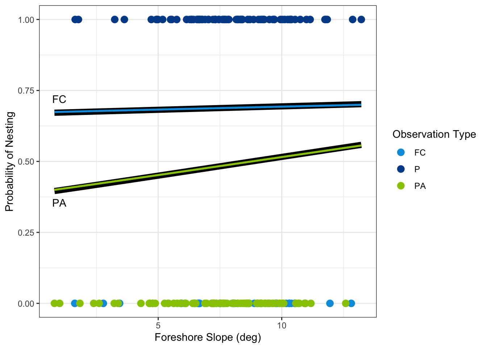

2 Data and Methods
2.1 Data Description
The data used for this study has a categorical outcome for nest type in which the possible outcomes are as follows:
\[ \text{Nest Type} = \begin{cases} \text{P} & \text{Presence} \\ \text{PA} & \text{Pseudo Absence} \\ \text{FC} & \text{False Crawl} \end{cases} \]
As mentioned in the previous chapter, the presence and false crawl data were human observed while the false crawl data was computer generated. For presence, the locations were recorded by a FWC employee on “turtle patrol” and drove the beach, noticing the presence of a nest. The false crawl data was also recorded by a FWC employee who noticed turtle tracks leading up the beach to no nest with a turn around point, leading back to the water. The pseudo absence data was randomly generated using ArcGIS by defining a border around an existing nest, then randomly selecting from these “no known nest” areas.
Beach slope and foreshore slope are continuous predictors calculated based on values for the given location. Beach slope (deg.) is measured from the mean low water line (MLWL) to the mean high water line (MHWL). Foreshore slope (deg.) is measured from the mean high water line (MHWL) to the potential for vegetation. For either slope, a larger value indicates a steeper slope, while a smaller value indicates a flatter slope.
2.2 Statistical Methods
2.2.1 Binary Logistic Regression
Binary logistic regression is used to predict the probability of an outcome when there are only two possible outcomes (1–4). For our purposes, we used binary logistic regression to predict the probability of a nest being present (1) or not (0). Our outcomes were either that a detected nest was present (P), or there was not a nest detected (PA or FC). In order to model binary outcomes using logistic regression, the model will have the following form (1,4):
\[ \ln \left( \frac{\hat\pi}{1-\hat\pi} \right) = \hat\beta_0 + \hat\beta_1 x_1 + ... + \hat\beta_k x_k, \tag{2.1}\]
where
- \(\pi = P[Y = 1]\) is the probability of the outcome or event,
- \(\beta_0\) is the \(y\)-intercept,
- \(\beta_i\) is the slope of the \(i\) predictor,
- \(x_i\) is the value of the \(i\) predictor, and
- \(k\) is the number of predictors in the model.
Equation 2.1 gives the log-odds of the outcome (observed nest). In order to interpret the regression coefficients (\(\hat{\beta}_i\)), we must exponentiate. This allows us to interpret the odds directly, rather than the log-odds. The odds ratio, or the exponentiation of the slope, for the \(i^{\text{th}}\) predictor is:
\[ \text{OR}_i = e^{\hat{\beta}_i}. \tag{2.2}\]
Applying Equation 2.2 to the \(y\)-intercept (\(\exp\{\hat\beta_0\}\)) gives the baseline odds for a turtle to nest. In other words, this is the odds ratio of a nest ocurring at a given location if all predictors are 0; in this project, that means both beach slope and foreshore slope are flat.
Usually we are interested in comparing \(\beta_i\) against 0 – if a slope is 0, then the predictor has no effect on the outcome as the slope of the line is flat. When dealing with odds ratios, that means we are comparing against \(1\). If \(\exp\{\hat\beta_i\} < 1\), the predictor has a negative effect on outcome. If \(\exp\{\hat\beta_i\} = 1\), the predictor is not related to the outcome. If \(\exp\{\hat\beta_i\} > 1\), the predictor has a positive effect on the odds of the outcome.
Interpretations for odds ratios are multiplicative. For continuous predictors, we provide the following interpretations for odds ratios: for every 1 unit increase in the predictor, the odds of our outcome are multiplied by \(\exp\{\hat\beta_i\}\).
To test for the significance of our predictors, we use the Wald \(z\) (1,4). The hypotheses are as follows:
- \(H_0: \hat\beta_i = 0\)
- \(H_\text{A}: \hat\beta_i \neq 0\)
The null hypothesis, \(H_0\), suggests the slope of the probability of the predictor is 0, or flat. The alternative hypothesis, \(H_\text{A}\), indicates the slope of the probability of the predictor is not equal to 0. In order for the predictor to be significant, we need to have reason to reject the null hypothesis and conclude the slope is not equal to 0, or not flat.
Once we have established our hypotheses, we then calculate the test statistic using the following formula (1,4):
\[ z_0 = \frac{\hat\beta_i}{\text{SE}_{\beta_i}} , \tag{2.3}\]
where
- \(\hat\beta_i\) is the slope of the \(i\) predictor, and
- \(\text{SE}_{\beta_i}\) is the standard error of \(\beta_i\).
Using Equation 2.3, we can then find the associated two-sided \(p\)-value. If the \(p\)-value is less than our significance level, \(\alpha\), we reject \(H_0\) and conclude that the predictor is significant.
Our confidence intervals will be calculated using the following formula (1,4):
\[ \hat\beta_i \pm z_{\alpha/2} \times \text{SE}_{\beta_i}, \tag{2.4}\]
where
- \(\hat\beta_i\) is the slope of the \(i\) predictor,
- \(z_{\alpha/2}\) is the critical value of \(z\), and
- \(\text{SE}_{\beta_i}\) is the standard error of \(\beta_i\).
To find the 95% CI for the OR, we exponentiate Equation 2.4, the confidence interval for \(\beta\),
\[ \exp\{\hat\beta_i \pm z_{\alpha/2} \times \text{SE}_{\beta_i}\}. \tag{2.5}\]
2.2.2 Multinomial Logistic Regression
Multinomial logistic regression is used to predict the probability of an event when there are three or more possible unordered outcomes (1–4). If there are \(c\) classes in the outcome, this approach simultaneously estimates \(c-1\) models. The \(c^{th}\) category is used as the reference category while the other \(c-1\) categories are compared to it.
The model of multinomial logistic regression is in the form (1,4):
\[ \ln \left( \frac{\hat\pi_j}{\hat\pi_{\text{ref}}} \right) = \hat{\beta}_{0j} + \hat{\beta}_{1j} x_1 + ... + \hat{\beta}_{kj} x_k, \tag{2.6}\]
where \(\hat\pi_j\) is the probability of the response category, \(\hat\pi_{\text{ref}}\) represents the probability of the reference category, and \(k\) is the number of predictors in the model.
Like in binary logistic regression (Equation 2.1), this initial multinomial logistic model will give us the log-odds of our outcome, an observed nest. We will again exponentiate and interpret in terms of the odds ratio, like in Equation 2.2,
\[ \text{OR}_i = e^{\hat{\beta}_{ij}}. \tag{2.7}\]
Odds ratios for multinomial logistic regression models (Equation 2.6) generally interpret the same as in binary logistic regression (Equation 2.1), with a slight change to the comparison in the outcome (2). For continuous predictors, we provide the following interpretations for odds ratios in multinomial logistic regression: for every 1 unit increase in the predictor, the odds of group \(j\) in the outcome, as compared to the reference group in the outcome, are multiplied by \(\exp\{\hat\beta_{ij}\}\).
Statistical significance is performed similarly as in the binary logistic regression case. Both the Wald \(z\) from Equation 2.3 and the confidence interval for \(\beta_i\) from Equation 2.4 extend to the multinomial case (1,4). As in binary logistic regression, to find the 95% CI for the OR, we exponentiate the confidence interval for \(\hat\beta\), as seen in Equation 2.5.
2.2.3 Model Comparison
Both binary logistic and multinomial logistic regression models can be used to predict categorical outcomes. In order to compare the models in this particular application, we will look at classification accuracy and other related measures.
First, we find the predicted probabilities for each observation. In the case of binary logistic regression, we find the predicted probability of a nest being present. We define \(\hat\pi = \text{P}[\text{Nest Present}]\). Mathematically,
\[ \hat{\text{Nested}} = \begin{cases} \text{1 (predicted nest)} & \text{if } \hat{\pi} \ge 0.5 \\ \text{0 (not a predicted nest)} & \text{if } \hat{\pi} < 0.5 \end{cases} \]
In the case of multinomial logistic regression, we have three possible outcomes, so we find the predicted probabilities for each of the three outcomes. To classify, we look at the predicted probabilities for each observation and assign the observation to the category with the highest predicted probability. We define \(\hat\pi_{\text{P}} = \text{P}[\text{Nest Present}]\), \(\hat\pi_{\text{PA}} = \text{P}[\text{Pseudo Absence}]\), and \(\hat\pi_{\text{FC}} = \text{P}[\text{False Crawl}]\). Mathematically,
\[ \hat{\text{Nest Type}} = \begin{cases} \ \ \text{ P} & \text{if } \hat{\pi}_{\text{P}} = \max(\hat{\pi}_{\text{P}}, \hat{\pi}_{\text{PA}}, \hat{\pi}_{\text{FC}}) \\ \text{PA} & \text{if } \hat{\pi}_{\text{PA}} = \max(\hat{\pi}_{\text{P}}, \hat{\pi}_{\text{PA}}, \hat{\pi}_{\text{FC}}) \\ \text{FC} & \text{if } \hat{\pi}_{\text{FC}} = \max(\hat{\pi}_{\text{P}}, \hat{\pi}_{\text{PA}}, \hat{\pi}_{\text{FC}}) \end{cases} \]
Then, to examine the accuracy of the models, we look at confusion matrices and classifications. The confusion matrix shows the observed outcomes and the predicted outcomes. A confusion matrix is defined as follows,
| Observed Positive | Observed Negative | ||
|---|---|---|---|
| Predicted Positive | True Positive (TP) | False Positive (FP) | Total Predicted Positives (TP + FP) |
| Predicted Negative | False Negative (FN) | True Negative (TN) | Total Predicted Negatives (FN + TN) |
| Total True Positives (TP + FN) | Total True Negatives (FP + TN) | Total Observations (TP + FP + TN + FN) |
The current analysis is interested in comparing the performance of pseudo absence points and false crawl points when representing the lack of an observed nest. Thus, we define a “positive” outcome as an absent nest (PA, FC) and a “negative” outcome as an observed nest (P). Then using the confusion matrix, we can calculate the following measures to assess model performance:
Accuracy
The accuracy of a model is defined as the percentage of the observations were correctly categorized by the model (2,3). In the context of our analysis, accuracy represents the percentage of nests that were correctly classified as present (P) or not present (either PA or FC) by the model. Mathematically,
\[ \text{accuracy} = \frac{\text{TP} + \text{TN}}{\text{TP} + \text{FP} + \text{TN} + \text{FN}} \tag{2.8}\]
where
- TP = number of true positives,
- TN = number of true negatives,
- FP = number of false positives, and
- FN = number of false negatives.
Sensitivity
The sensitivity of a model is the probability of correctly identifying positive outcomes (2,3). In the context of our analysis, sensitivity represents the probability of correctly identifying present nests (P) by the model. Mathematically,
\[ \text{sensitivity} = \frac{\text{TP}}{\text{TP + FN}} \tag{2.9}\]
where
- TP = number of true positives and
- FN = number of false negatives
Specificity
The specificity of a model is the probability of correctly identifying negative outcomes (2,3). In the context of our analysis, specificity represents the probability of correctly identifying no nest (either PA or FC) by the model. Mathematically,
\[ \text{specificity} = \frac{\text{TN}}{\text{FP + TN}} \tag{2.10}\]
where
- TP = number of true positives,
- TN = number of true negatives,
- FP = number of false positives, and
- FN = number of false negatives.
Positive Predictive Value (PPV)
The positive predictive value (PPV) of a model is the probability that a positive prediction is actually positive (2,3). In the context of our analysis, PPV represents the probability that a nest predicted as present (P) is actually present. Mathematically,
\[ \text{PPV} = \frac{\text{TP}}{\text{TP + FP}} \tag{2.11}\]
where
- TP = number of true positives,
- TN = number of true negatives,
- FP = number of false positives, and
- FN = number of false negatives.
Negative Predictive Value (NPV)
The negative predictive value (NPV) of a model is the probability that a negative prediction is actually negative (2,3). In the context of our analysis, NPV represents the probability that a nest predicted as not present (either PA or FC) is actually not present. Mathematically,
\[ \text{NPV} = \frac{\text{TN}}{\text{TN + FN}} \tag{2.12}\]
where
- TP = number of true positives,
- TN = number of true negatives,
- FP = number of false positives, and
- FN = number of false negatives.
2.2.4 Current Analysis
Binary logistic regression was used to construct two separate models comparing the probability of nesting against the probability of not nesting. We defined not nesting in two different ways, once using pseudo absence points and once using false crawl points. First, we compare presence versus pseudo absence:
\[ \ln \left( \frac{\hat\pi_{\text{P}}}{\hat{\pi}_{\text{PA}}}\right) = \hat\beta_0 + \hat\beta_1 x_1 + \hat\beta_2 x_2 + \hat\beta_3 x_1 x_2, \tag{2.13}\]
where
- \(\hat\pi_{\text{P}}\) = probability of presence,
- \(\hat\pi_{\text{PA}} = 1 - \hat{\pi}_{\text{P}}\) = probability of pseudo absence,
- \(x_1\) = beach slope, and
- \(x_2\) = foreshore slope.
Then, we compare presence versus false crawl:
\[ \ln \left( \frac{\hat\pi_{\text{P}}}{\hat{\pi}_{\text{FC}}}\right) = \hat\beta_0 + \hat\beta_1 x_1 + \hat\beta_2 x_2 + \hat\beta_3 x_1 x_2, \tag{2.14}\]
where
- \(\hat\pi_{\text{P}}\) = probability of presence,
- \(\hat\pi_{\text{FC}} = 1 - \hat{\pi}_{\text{P}}\) = probability of false crawl,
- \(x_1\) = beach slope, and
- \(x_2\) = foreshore slope.
Multinomial logistic regression was used to model all three possible outcome categories simultaenously. Again, we compared presence points against pseudo absence points and, simultaneously, presence points against false crawl points. Mathematically, we simultaneously estimated the following two models:
\[ \begin{aligned} \ln \left( \frac{\hat\pi_{\text{P}}}{\hat{\pi}_{\text{PA}}}\right) &= \hat\beta_0 + \hat\beta_1 x_1 + \hat\beta_2 x_2 + \hat\beta_3 x_1 x_2, \\ \ln \left( \frac{\hat\pi_{\text{P}}}{\hat{\pi}_{\text{FC}}}\right) &= \hat\beta_0 + \hat\beta_1 x_1 + \hat\beta_2 x_2 + \hat\beta_3 x_1 x_2, \end{aligned} \tag{2.15}\]
where
- \(\hat\pi_{\text{P}}\) = probability of presence,
- \(\hat\pi_{\text{PA}}\) = probability of pseudo absence,
- \(\hat\pi_{\text{FC}}\) = probability of false crawl,
- \(x_1\) = beach slope, and
- \(x_2\) = foreshore slope.
For all models, adjusted odds ratios, 95% confidence intervals for the adjusted odds ratios, and significance of predictors are reported. Statistical significance was defined a priori as \(p < 0.05\).
Predicted values were calulated based on estimated models, then compared against true values, constructing the confusion matrix. Modeling approaches are compared by considering the resulting classification accuracy, sensitivity of nest detection, specificity of nest detection, positive predictive value (PPV), and negative predictive value (NPV) of each model.
Data management, analysis, and graphing was performed using R version 4.5.1 (5). Data management was completed using functions from tidyverse package (6). The glm function was used to perform binary logistic regression, while the multinom function from the nnet package was used to perform multinomial logistic regression (7). Finally, the caret package was used to create confusion matrices (8).
2.3 Results
2.3.1 Estimated Models
Binary Logistic Regression
Presence vs. False Crawl
Modeling the probability of the presence of a nest (1) versus a false crawl (0), we looked at nest status as a function of beach slope, foreshore slope and the interaction between beach slope and foreshore slope. The model produced was:
\[ \ln \left( \frac{\hat\pi_{\text{P}}}{\hat{\pi}_{\text{FC}}} \right) = 0.61 + 0.016 x_1 + 0.046 x_2 - 0.0079x_1 x_2, \tag{2.16}\]
where
- \(\hat\pi_{\text{P}}\) = probability of presence,
- \(\hat\pi_{\text{FC}}\) = probability of false crawl,
- \(x_1\) = beach slope, and
- \(x_2\) = foreshore slope.
Because the interaction between beach slope and foreshore slope was not significant, removed the interaction from the model for parcimony and interpretability. The model without the interaction term was:
\[ \ln \left( \frac{\hat\pi_{\text{P}}}{\hat{\pi}_{\text{FC}}} \right) = 0.88 + 0.049 x_1 + 0.011 x_2, \tag{2.17}\]
where
- \(\hat\pi_{\text{P}}\) = probability of presence,
- \(\hat\pi_{\text{FC}}\) = probability of false crawl,
- \(x_1\) = beach slope, and
- \(x_2\) = foreshore slope.
These results reveal that for a 1 degree increase in the beach slope, the odds of a nest being present are multiplied by \(e^{-0.049} = 0.95\), or are decreased by 5%. When foreshore slope increases by 1 meter, the odds of a nest being present are multiplied by \(e^{0.011} = 1.01\), or are increased by 1%.
Presence vs. Pseudo Absence
For the probability of the presence of a nest (1) versus a pseudo absence (0) we also considered the interaction model where nest status was modeled as a function of beach slope, foreshore slope and the interaction between beach slope and foreshore slope. The model produced was:
\[ \ln \left( \frac{\hat\pi_{\text{P}}}{\hat{\pi}_{\text{PA}}} \right) = 0.34 + 0.013 x_1 + 0.009 x_2 - 0.0001 x_1 x_2, \tag{2.18}\]
where
- \(\hat\pi_{\text{P}}\) = probability of presence,
- \(\hat\pi_{\text{FC}}\) = probability of false crawl,
- \(x_1\) = beach slope, and
- \(x_2\) = foreshore slope.
The interaction between beach slope and foreshore slope was again not significant (\(p > 0.05\)), it was removed for parcimony. The model without the interaction term was:
\[ \ln \left( \frac{\hat\pi_{\text{P}}}{\hat{\pi}_{\text{PA}}} \right) = 0.31 + 0.022 x_1 + 0.013 x_2 \tag{2.19}\] where
- \(\hat\pi_{\text{P}}\) = probability of presence,
- \(\hat\pi_{\text{FC}}\) = probability of false crawl,
- \(x_1\) = beach slope, and
- \(x_2\) = foreshore slope.
These results reveal that for a 1 degree increase in the beach slope, the odds of a nest being present are multiplied by \(e^{0.022} = 1.02\), or are increased by 2%. For a 1 degree increase in foreshore slope, the odds of a nest being present are multiplied by \(e^{0.013} = 1.01\), indicating a 1% increase in the odds.
Multinomial Logistic Regression
For multinomial logistical regression models we looked at the same model structures, but with the model accounting for all three possible outcomes simultaneously. First looking at the models including the interation between beach slope and foreshore slope:
\[ \begin{aligned} \ln \left( \frac{\hat\pi_{\text{P}}}{\hat\pi_{\text{PA}}} \right) &= -0.569 + 0.029x_1 + 0.026x_2 + 0.007x_1x_2 \\ \ln \left( \frac{\hat\pi_{\text{P}}}{\hat\pi_{\text{FC}}} \right) &= \ \ \ 0.637 + 0.008x_1 + 0.041x_2-0.007x_1 x_2 \end{aligned} \tag{2.20}\]
As in the binary logistic regression models, the interaction between beach slope and foreshore slope was not significant (\(p > 0.05\)). The interaction term was removed for parcimony, resulting in the following models:
\[ \begin{aligned} \ln \left( \frac{\hat\pi_{\text{P}}}{\hat\pi_{\text{PA}}} \right) &= -0.759 + 0.088x_1 + 0.051x_2 \\ \ln \left( \frac{\hat\pi_{\text{P}}}{\hat\pi_{\text{FC}}} \right) &= \ \ \ 0.890 + 0.048x_1 + 0.010x_2 \end{aligned} \tag{2.21}\]
In the first model, with pseudo-absence points as the reference category, we see that for a 1 degree increase in the beach slope, the odds of a nest being present, as compared to a pseudo absence, are multiplied by \(e^{0.088} = 1.09\), indicating a 9% increase in odds. For a 1 degree increase in foreshore slope, the odds of a nest being present, as compared to a pseudo absence, are multiplied by \(e^{0.051} = 1.05\), which shows a 5% increase in odds.
In the second model, with false crawl points as the reference category, we see that for a 1 degree increase in the beach slope, the odds of a nest being present, as compared to a false crawl, are multiplied by \(e\)0.048 = 0.95, indicating a 5% decrease in odds. For a 1 degree increase in foreshore slope, the odds of a nest being present, as compared to a pseudo absence, are multiplied by \(e\)0.0095 = 1.01, which shows a 1% increase in odds.
2.3.2 Classification
Binary Logistic Regression
Considering only the models predicting nesting status as a function of both beach slope and foreshore slope, confusion matrices were examined to determine the accuracy, sensitivity, specificity, positive predictive value (PPV), and negative predictive value (NPV) for each model.
| Observed | |||
| PA | P | ||
|
Predicted
|
PA | 51 | 27 |
| P | 41 | 38 | |
| Observed | |||
| FC | P | ||
|
Predicted
|
FC | 0 | 38 |
| P | 0 | 79 | |
Table 2.1 shows the confusion matrix for the binary logistic regression model predicting presence versus pseudo absence, while Table 2.2 shows the confusion matrix for the binary logistic regression model predicting presence versus false crawl. The model comparing against pseudo absence correctly classified 38/79 presence points and 51/78 pseudo absence points while the model comparing against false crawl correctly classified 79/79 presence points and 0/38 false crawl points.
Multinomial Logistic Regression
Examining the confusion matrix for the multinomial logistic regression model predicting among presence, pseudo absence, and false crawl, means that we now have a 3 \(\times\) 3 confusion matrix to consider.
| Observed | ||||
| P | PA | FC | ||
|
Predicted
|
P | 38 | 27 | 20 |
| PA | 41 | 51 | 18 | |
| FC | 0 | 0 | 0 | |
Table 2.3 shows the confusion matrix for the multinomial logistic regression model predicting among presence, pseudo absence, and false crawl. The model correctly classified 38/85 presence points, 51/110 pseudo absence points, and 0/0 false crawl points.
In order to compare the models side by side, we will now consider the “positive” outcome as either PA vs. P+FC or FC vs. P+PA for the multinomial logistic regression model. This allows us to reduce the 3 \(\times\) 3 confusion matrix into a 2 \(\times\) 2 confusion matrix.
| Observed | |||
| PA | P or FC | ||
|
Predicted
|
PA | 51 | 59 |
| P or FC | 27 | 58 | |
| Observed | |||
| FC | P or PA | ||
|
Predicted
|
FC | 0 | 0 |
| P or PA | 38 | 157 | |
Table 2.4 and Table 2.4 show the confusion matrices for the multinomial logistic regression model predicting presence versus pseudo absence, The model comparing against pseudo absence correctly classified 38/79 presence points and 51/78 pseudo absence points while the model comparing against false crawl correctly classified 79/79 presence points and 0/38 false crawl points.
2.3.3 Model Comparison
Model Results and Interpretations
Table 2.6 shows model results for the binary and multinomial logistic regressions using pseudo absence as the reference group while Table 2.7 shows the same but using false crawl as the reference group.
|
|
|
|
|
|---|---|---|---|
| Binary | Foreshore Slope |
1.01 (0.98 - 1.05) |
0.460 |
| Beach Slope | 1.02 (0.99 - 1.05) |
0.154 |
|
| Multinomial | Foreshore Slope |
1.05 (0.92 - 1.21) |
0.467 |
| Beach Slope |
1.09 (0.97 - 1.23) |
0.162 |
Comparing the two modeling approaches, we see that slopes, confidence intervals, and p-values are similar when comparing observed nests to pseudo absence points. For foreshore slope, the adjusted odds ratio under binary logistic is 1.01 (95% CI: 0.98, 1.05; p = 0.460) and is 1.05 (95% CI: 0.92, 1.21; p = 0.467) under multinomial logistic. Similarly, the adjusted odds ratio for beach slope under binary logistic is 1.02 (95% CI: 0.99, 1.05; p = 0.154) and is 1.09 (95% CI: 0.97, 1.23; p = 0.162) under multinomial logistic.
The corresponding interpretations are similar as well. For a 1 degree increase in foreshore slope, the odds of nesting increase by 1% under the binary logistic model and by 5% under the multinomial logistic model. For a 1 degree increase in beach slope, the odds of nesting increase by 2% under the binary logistic model and by 9% under the multinomial logistic model.
|
|
|
|
|
|---|---|---|---|
| Binary | Foreshore Slope |
1.01 (0.85 - 1.20) |
0.899 |
| Beach Slope | 0.95 (0.83 - 1.10) |
0.487 |
|
| Multinomial | Foreshore Slope |
1.01 (0.85 - 1.20) |
0.914 |
| Beach Slope |
0.95 (0.83 - 1.09) |
0.490 |
Again comparing the two modeling approaches, we see that slopes, confidence intervals, and p-values are similar when comparing observed nests to false crawl points. For foreshore slope, the adjusted odds ratio under binary logistic is 1.01 (95% CI: 0.85, 1.20; p = 0.899) and is also 1.01 (95% CI: 0.85, 1.20; p = 0.914) under multinomial logistic. Similarly, the adjusted odds ratio for beach slope under binary logistic is 0.95 (95% CI: 0.83, 1.10; p = 0.487) and is 0.95 (95% CI: 0.83, 1.09; p = 0.490) under multinomial logistic.
The corresponding interpretations are the same between the two models. For a 1 degree increase in foreshore slope, the odds of nesting increase by 1% under both the binary and multinomial logistic models. For a 1 degree increase in beach slope, the odds of nesting decrease by 5% under the binaryand multinomial logistic models.
Model Performance
Confusion matrices were be used to assess the performance of each model. The following measures were calculated for each model: accuracy, sensitivity, specificity, positive predictive value (PPV), and negative predictive value (NPV). Table 2.8 shows the performance measures for each of the four models considered.
|
|
|
|||
|---|---|---|---|---|
|
|
|
|
|
|
| Accuracy | 0.57 | 0.68 | 0.56 | 0.81 |
| Sensitivity | 0.55 | – | 0.65 | 0.00 |
| Specificity | 0.58 | 0.68 | 0.50 | 1.00 |
| PPN | 0.65 | 0.00 | 0.46 | – |
| NPV | 0.48 | 1.00 | 0.68 | 0.81 |
We see that the binary model accurately categorized 57% of the pseudo absence points and 68% of the false crawl points. The sensitivity shows that the binary model is correctly identifying 55% of pseudo absence points, however, the model never categorized an observation as a false crawl. Therefore, we cannot compute sensitivity when comparing present nests to false crawl. The specificity shows the model correctly identifies observations as pseudo absence 58% of the time and false crawl 68% of the time. The positive predictive value shows that out of what was categorized as pseudo absence points, 65% were actually pseudo absence points and 0% were actually false crawl points. For the negative predictive value, the model correctly identifying observed nests 48% of the time when compared to pseudo absence points and 100% of the time when compared to false crawl points.
The results of the multinomial logistic regression are somewhat similar to those of the binary logistic regression. Like before, when false crawl is the reference group of the outcome, the model never predicts an observation is a false crawl.
The multinomial model accurately categorized 56% of the pseudo absence points and 81% of the false crawl points. The sensitivity shows that the multinomial model is correctly identifying 65% of pseudo absence points, however, the model never categorized an observation as a false crawl, making the sensitivity 0%. The specificity shows the model correctly identifies observations as pseudo absence 50% of the time and false crawl 100% of the time. The positive predictive value shows that out of what was categorized as pseudo absence points, 46% were actually pseudo absence points; because no nests were categorized as false crawls, the positive predictive value cannot be computed. For the negative predictive value, the model correctly identified nests 68% of the time when comparing against pseudo absence points and 81% of the time when compared to false crawl points.
2.3.4 Model Visualization
In the above data visualization, the binary logistic regression models are represented as the thick black lines. The multinomial logistic regression models are the thin blue and green lines overlaid. As can be seen, the resulting models are not different in a meaningful way. While the models aren’t exactly the same, the predicted probabilities are very similar between the two modeling approaches. This further supports the findings from the model results and performance measures that both modeling approaches yield similar results.